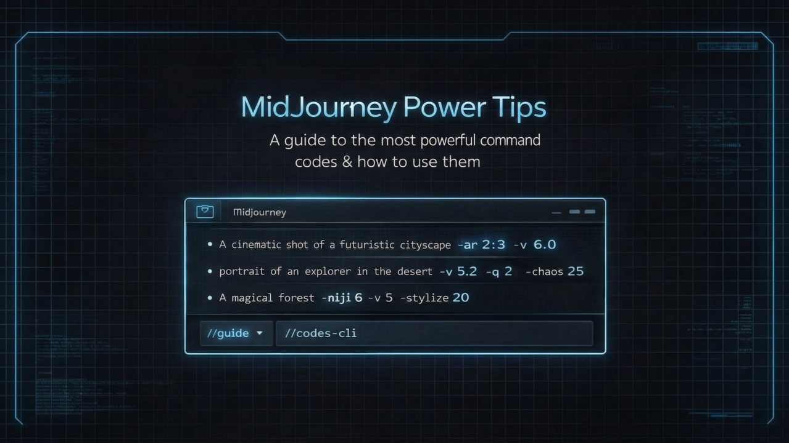

The Creative Shift January 28, 2026
The 4x4 Method for AI Video
How to Stop Hoping and Start Directing
Most AI video attempts fail for one reason.
People ask models to generate motion without defining structure.
The result is drift, flicker, and visual chaos.
The solution is not better prompts. It is better framing.
That is where the 4x4 method comes in.
WHAT THE 4x4 METHOD ACTUALLY IS
The 4x4 method is a way to design AI video intentionally using still images as anchors.
Instead of generating video directly, you build it in controlled stages.
The core idea is simple:
Four short segments.
Each segment is driven by clear start and end frames.
Motion happens between known states, not guesses.
This removes randomness and gives you creative control.
STEP ONE: DESIGN THE STORY FIRST
Before generating anything, define the arc.
What changes from beginning to end. Camera position. Mood. Subject state.
If you cannot describe the transition, do not generate yet.
Motion without intention is noise.
STEP TWO: CREATE FIVE KEY IMAGES
This is where most people misunderstand the method.
You do not create four images. You create five.
Frame 1. The opening state.
Frame 2. Early transition.
Frame 3. Midpoint shift.
Frame 4. Pre-resolution.
Frame 5. The final state.
Each image should share:
Consistent character design.
Consistent lighting.
Consistent framing language.
These are not variations. They are planned beats.
STEP THREE: BUILD FOUR MICRO-SEGMENTS
Now you generate motion in segments.
Segment 1. Frame 1 to Frame 2.
Segment 2. Frame 2 to Frame 3.
Segment 3. Frame 3 to Frame 4.
Segment 4. Frame 4 to Frame 5.
Each segment is short. Controlled. Intentional.
You are no longer asking the model to invent motion. You are asking it to interpolate between known points.
That is a critical difference.
STEP FOUR: ASSEMBLE AND POLISH
Once the segments are generated, you assemble them.
Because each segment shares visual continuity, the final result feels designed rather than generated.
You can now:
Adjust pacing.
Trim frames.
Add sound design.
Control emotional timing.
This is direction, not prompting.
See content credentials
WHY THE 4x4 METHOD WORKS
AI models are excellent at filling gaps. They are terrible at defining intent.
The 4x4 method removes guesswork by giving the model structure.
It turns video generation into a design problem instead of a hope-based experiment.
THE CREATIVE SHIFT TAKEAWAY
If you want AI video to look intentional, stop asking for motion.
Design states. Design transitions. Design constraints.
The 4x4 method is not about tricks. It is about thinking like a director instead of a prompter.
That shift changes everything.
The Creative Shift
266 subscribers
Subscribed

Want this kind of thinking on your brand?
The Creative Shift is the thinking behind the client work. Book a call, or read the original on LinkedIn.